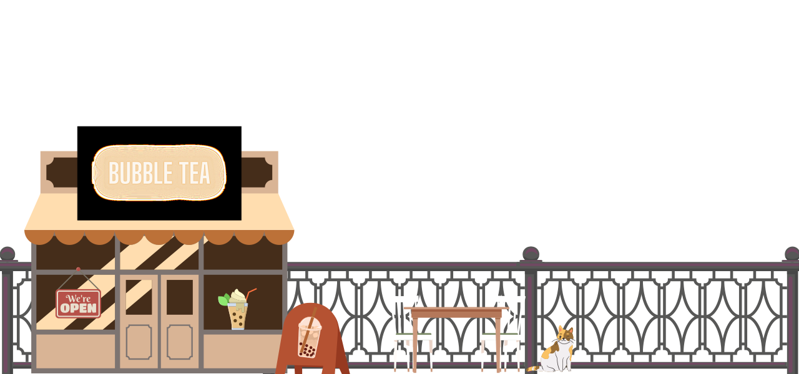
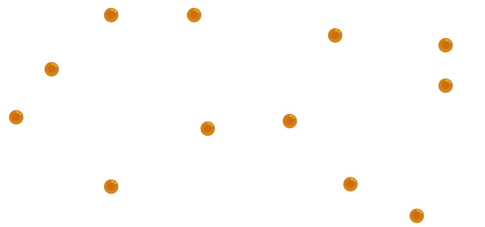
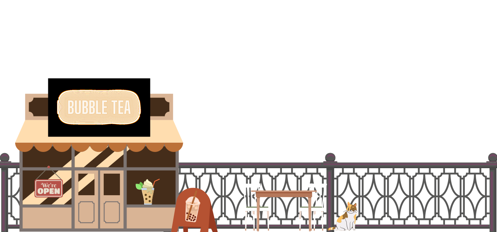
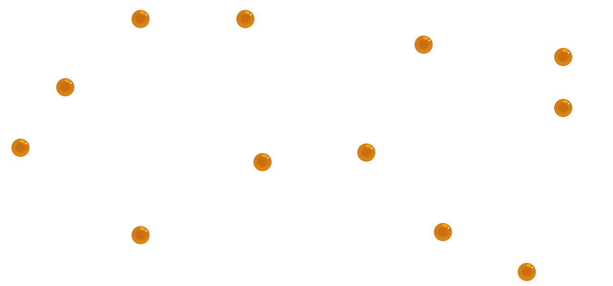

Southeast Asia Spends US$3.7B on Boba
Southeast Asia loves bubble tea or boba, Indonesia and Thailand are market leaders in terms of annual turnover, spending a whopping US$748 million and US$1.6 billion in 2021.
Indonesians have taken to ordering their favourite bubble teas on delivery platforms throughout the pandemic. Since opening up again, retail sales have been recovering well,but they are sharing the sales with delivery platforms because of bad traffic and hot weather.
Thai consumers drink the most bubble tea on average compared to the rest of us. According to restaurant review platform Wongnai there are more than 31 thousand bubble tea shops in the kingdom.
What Singapore lacks in population size, it makes up with spending power. Paying an average price of US$3.90 for a regular standard-sized cup of sugary bliss of the same brand and product, compared to US$2 in the rest of Southeast Asia.
SEA Annual Turnover for Bubble Tea
So what's happening in Singapore?
First some history...Bubble tea first started appearing on Singapore shores in 1992, brought in by Ann Chew who opened a shop called Bubble Tea Garden in Marina Square. The tea was served in a cocktail glass with thick straws, some of the flavours offered were Pearl Red Bubble Tea, Yam Shake, Honey Egg Yolk, and Whisky Red Tea. Bubble Tea shops were cafes much like Starbucks and attracted crowds of students who could hang out and also post messages on a bulletin board in the shops (great way to flirt with the cutie sitting in the corner). Tea Shops like these soon sprang up in upmarket shopping centres like Wisma Atria and other Orchard locations.
Anyway back to what is happening in Singapore?
Well, Singapore imported 2300 metric tonnes (2.3 million kg) of tapioca and tapioca-based products in 2021. Here are some of the import trends over the last 10 years.
- 2013 saw a significant dip in imports due to a health scare and a ban of certain brands. AVA banned the import of some brands of pearls which were found to contain maleic acid - a preservative which can cause kidney damage.
- 2019 saw a spike in the imports as 13 foreign brands of bubble tea entered the Singapore market.
Import of Tapoica Products to Singapore in Tonnes (2011 - 2021)
Top Stores Have 60% in Gross Margins But the Net Margins Paint a Different Picture
Gross margins can be high, but net margins can be low due to high rental and manpower costs, with some companies making loses. The bar chart is a breakdown of Nayuki's (top bubble tea chain in China) store-level profitability in 2021. Companies try to improve their profitability through reducing operating expenses (fresh ingredients cost more, increased diversity in offerings requires better inventory management), improving their supply chain efficiency, store efficiency (select ideal store location and optimise space taken), and manpower efficiency (e.g. standardise process). Companies with a rapid expansion strategy will face difficulties in controlling manpower and rental efficiencies in the short term but in the long term, there could be economies of scale which translate to cost savings.
Selecting a Store Location
Choosing the right spot to start your bubble tea store requires an understanding about consumers and the market. Many bubble tea shops are set up near train stations as they have high footfall. The density of bubble tea shops, and by extension intensity of competition, near each train station is the highest in the Central Business District Area. Perhaps because high stress, sleep deprived and high earning power workers make ideal customers.
Number of BBT stores near MRT stations in Singapore
Many Stations Have 10 or More BBT Stores Near Them
Surprisingly, three quarters of the stations with the most BBT stores are in the CBD! Regional hubs like Jurong East and Tampines rank among the top regions with the most BBT stores.
Who are the Top Competitors?
There are around 60 brands of BBT and 562 BBT stores in Singapore in 2023. Experts have called this a purple ocean market - hypercompetitive and oversaturated. BBT brands with the most number of stores are LiHO Tea (103) and KOI (82).
Conclusion
While Singaporean's love affair with bubble tea is here to stay, the data shows that it is not easy to enter the bubble tea market and compete successfully in it.
The data from this study comes from 'Bubble Tea - The business behind Southeast Asia's favourite drink' by Momentum Works and qlub in Aug 2022; as well as Google maps data on bubble tea shops in Singapore. Credits to Glen Teoh for the Python code for Bubble Tea Shops near MRT Stations in Singapore.